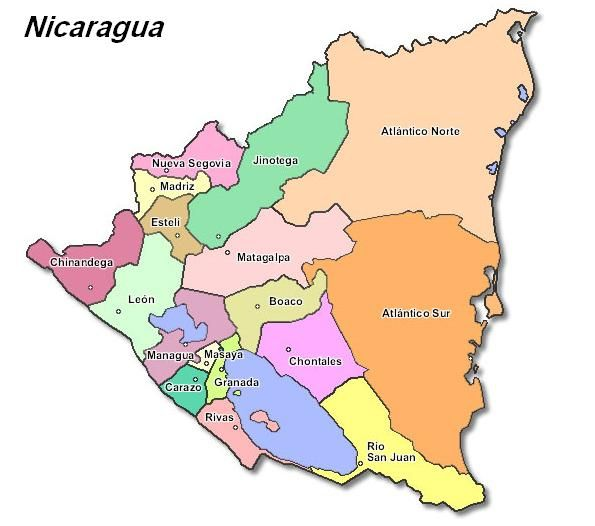

🇳🇮 Pabellón de la Memoria Viva
Azul y Blanco Soberano
Ecos de Soberanía
Recorre los cuatro trayectos cardinales que forjaron la autodeterminación, la dignidad y el carácter multiétnico de Nicaragua. La historia no es un recuerdo estático: es la raíz viva de nuestra identidad.
🧭 Trayectos Históricos del Museo
Haz clic en un eje para recorrerlo🗺️ Cartografía de la Soberanía
15 Departamentos • 2 Regiones Autónomas
Geografía de la Memoria y la Identidad
Toca o haz clic sobre cualquier departamento o región en el mapa de Nicaragua para descubrir los acontecimientos históricos, las batallas patrióticas y los héroes que forjaron la identidad de esa tierra.
Filtrar:
📍 Mapa Departamental
Toca cualquier pin
Lista de Departamentos: